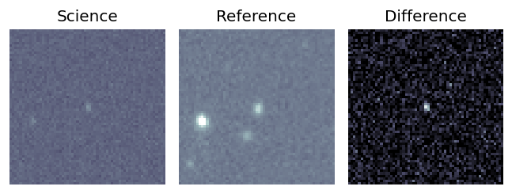
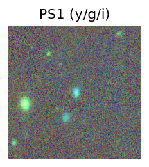
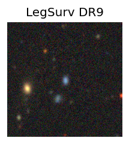
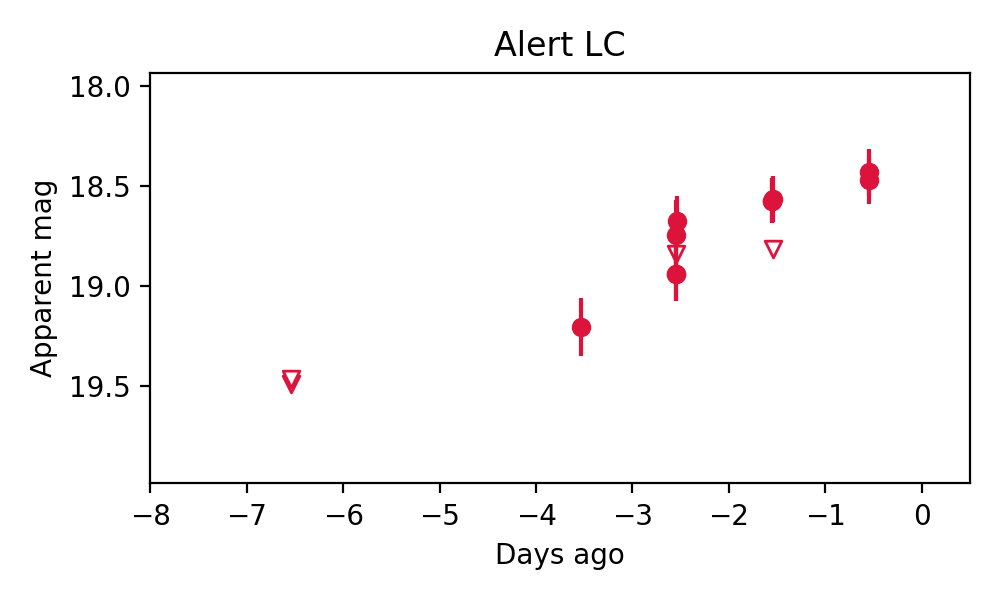
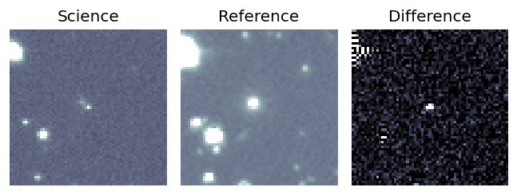
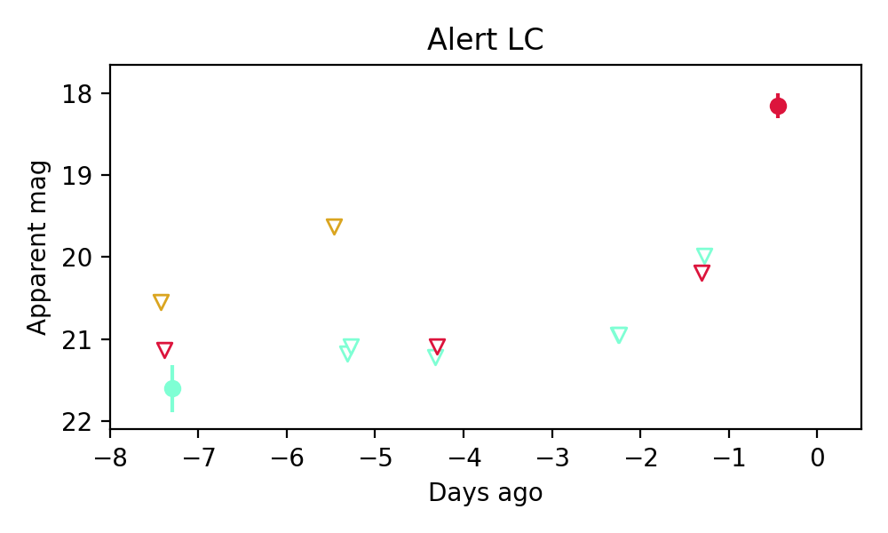

Candidate List 20250809Previous Day Next Day
Section 1: New Sources (age<1d) Section 2: Old (1-5d) sources observed last nightplaceholder
Section 1: New Afterglow/FBOT Cands Last Night (0)
Section 2: Older Sources Observed Last Night (3)
0. ZTF25abhruwm (FBOT?) [Back to Top] [Share] [Trigger Swift] [Fritz] [Lasair]RA, Dec: 190.67432, 12.17869 12h42m41.84s, 12d10m43.27sGalactic (l, b): 294.70062, 74.91057 ext(g-r) = 0.036
SDSS (10 arcsec):Found SDSS phot-z: z=0.07; peak abs mag = -19.08
PS1: 0 sources in 3 arcsec
LegacySurvey: 1 sources in 3 arcsec Closest: d = 0.95 arcsec, 213.2 deg (east of north) photoz=0.09 (68% bounds 0.05, 0.11), type=SER peak abs mag = -19.49 (68% bounds -18.31, -20.08)

Rise Rate:
g: -99 mag/day
r: 0.29 mag/day
i: -99 mag/day
Fade Rate:
g: -99 mag/day
r: -99 mag/day
i: -99 mag/day
1. ZTF25abhuzym (FBOT?) [Back to Top] [Share] [Trigger Swift] [Fritz] [Lasair]RA, Dec: 339.94572, 43.54631 22h39m46.97s, 43d32m46.73sGalactic (l, b): 99.07566, -13.14353 ext(g-r) = 0.178
PS1: 1 source in 3 arcsec Closest: d = 3.04 arcsec photoz=0.18+/-0.01 peak abs mag = -21.96
LegacySurvey: 0 sources in 3 arcsec

Extinction-corrected gr color:
From alerts: 0.29 +/- 99 mag
Extinction-corrected gi color:
From alerts: 0.77 +/- 99 mag
Rise Rate:
g: -99 mag/day
r: 2.38 mag/day
i: -99 mag/day
Fade Rate:
g: -99 mag/day
r: -99 mag/day
i: -99 mag/day
2. ZTF25abhwfje (FBOT?) [Back to Top] [Share] [Trigger Swift] [Fritz] [Lasair]RA, Dec: 345.72189, 47.02488 23h 2m53.25s, 47d 1m29.57sGalactic (l, b): 104.4039, -11.9044 ext(g-r) = 0.256

PS1: 1 source in 3 arcsec Closest: d = 0.24 arcsec photoz=0.23+/-0.04 peak abs mag = -21.91
LegacySurvey: 0 sources in 3 arcsec

Extinction-corrected gr color:
From alerts: -0.57 +/- 0.24 mag
Rise Rate:
g: 0.38 mag/day
r: 0.4 mag/day
i: -99 mag/day
Fade Rate:
g: -99 mag/day
r: -99 mag/day
i: -99 mag/day